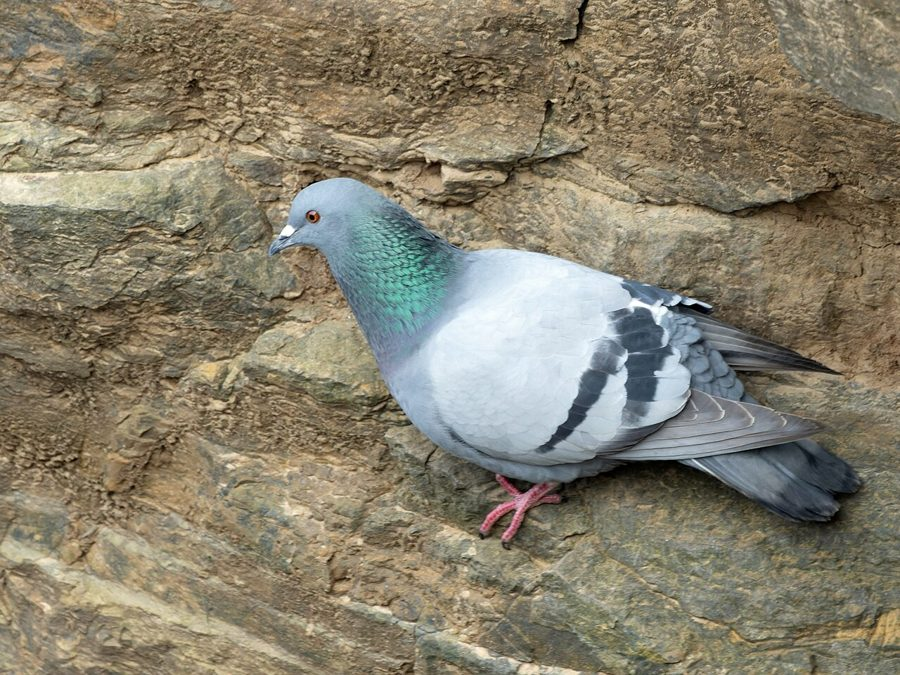

कबूतरRock Pigeon
Columba livia · Columbidae · BRD-0024

- Scientific name
- Columba livia Gmelin, 1789
- Family
- Columbidae
- Hindi
- कबूतर
- Status here
- native
- IUCN
- LC
When to look कब देखें
Present all year.
कबूतर / Rock Pigeon
Columba livia Gmelin, 1789 — Columbidae
कबूतर (रॉक पिजन) — पूर्वी उत्तर प्रदेश के ग्रामीण और शहरी दोनों क्षेत्रों में पाया जाने वाला एक अत्यंत परिचित निवासी पक्षी है। यह इंसानी बस्तियों, पुराने खंडहरों, मंदिरों, अनाज मंडियों और ऊंचे पुलों के नीचे घोंसले बनाता है। इसके जंगली रूप (wild type) का रंग नीला-स्लेटी होता है जिसके पंखों पर दो काली पट्टियां (wing bars) और गर्दन पर चमकीला हरा-बैंगनी रंग होता है, जबकि पालतू और आवारा (feral) कबूतरों में अनेक रंग पाए जाते हैं। यह मुख्य रूप से ज़मीन पर गिरकर पड़े अनाजों और बीजों को खाता है। धार्मिक और सांस्कृतिक रूप से यह शांति का प्रतीक माना जाता है और कई स्थानों पर इन्हें सामूहिक रूप से दाना खिलाया जाता है।
Quick Identification त्वरित पहचान
| Feature | Description |
|---|---|
| Size | Medium-sized stocky bird (30–35 cm total length); wingspan 60–68 cm |
| Colouration | Wild type is bluish-grey with iridescent green and purple neck patches |
| Wings | Two distinct black bands across the wings (wing bars) and a dark tail band |
| Feral Variants | High variation in colors (pure white, tan, checker, and dark grey-black) |
| Eyes | Bright orange or reddish-orange irises with dark pupils |
| Bare parts | Bill greyish-black with a white fleshy swelling (cere) at the base; legs pink |
Field tip: Look on old village structures, grain warehouses, or temples. They are easily spotted in large flocks foraging on the ground or roosting on roof ledges.
Morphology आकारिकी
Biometrics (typical measurements in the northern Indian plains):
| Measurement | Range |
|---|---|
| Total length | 300–350 mm |
| Wing (flattened chord) | 210–235 mm |
| Tail | 100–115 mm |
| Tarsus | 28–32 mm |
| Bill (culmen from base) | 18–22 mm |
| Weight | 250–380 g |
Plumage: The wild-type plumage is slate-grey, with a darker head and throat. The neck is covered in glossy, iridescent feathers that shimmer green and purple in sunlight. The lower back (rump) is white or light grey. The wings are light grey with two clear, thick black bars. The tail is grey with a broad black band at the tip. Feral and domestic populations show extreme variation, including mottled brown, white, and melanistic forms.
Bare parts: The bill is dark grey, characterized by a white, powdery, fleshy structure called the cere at the base of the upper mandible. The legs and feet are coral-pink to reddish-purple.
Vocalisations
Rock Pigeons communicate using low, guttural sounds.
- Contact and Display Call: A deep, rolling, rhythmic cooing groo-coo-coo-coo or coo-roo-coo, repeated during courtship displays.
- Alarm Call: A short, sharp grunting coo or hu-hu, made when suddenly startled or flying away from predators.
Ecological Role पारिस्थितिक भूमिका
Granivorous forager. Rock Pigeons are primary consumers of seeds and agricultural grains.
- Seed consumption: They forage in large flocks on agricultural stubble and threshing yards (khalihan), cleaning up spilled grains.
- Prey base: They form a major prey base for large nocturnal and diurnal birds of prey in semi-urban habitats.
- Nutrient recycler: Their droppings (guano) are rich in nitrogen, acting as fertilizer but also causing corrosion of old brick structures when accumulated in large quantities.
Life Cycle / Phenology जीवन चक्र
- Breeding season: Breeding occurs year-round, with peaks from March to May and September to November.
- Nesting: They nest on ledges of buildings, cavities in old wells, and window arches.
- Nest structure: A simple, messy platform of twigs, straw, and feathers, often reused for multiple clutches.
- Clutch size: Almost always 2 smooth, glossy white eggs.
- Incubation: 17–19 days, shared by both parents.
- Fledging: Chicks (squabs) are fed crop milk — a nutrient-rich secretion from the parent's crop — for the first week, and later regurgitated seeds. They fledge in about 30–35 days.
Host Plants or Prey आहार
Primary food items:
- Agricultural Grains: Wheat (Triticum aestivum), rice, mustard seeds, and pulses (chickpeas, lentils).
- Weed Seeds: Seeds of wild grasses and brassicas.
- Human Food: Leftover cooked rice, bread crumbs, and flour.
Predators / Natural Enemies शत्रु
- Raptors: Shikra (Accipiter badius) and Black Kite (Milvus migrans) hunt adults and fledglings.
- House Crow (Corvus splendens) — raids nests to eat eggs and newly hatched squabs.
- Mammals: Domestic cats and rats (Rattus rattus) prey on nestlings in roof cavities.
Agricultural / Human Relevance कृषि प्रासंगिकता
Grain silo visitor. Pigeons are major visitors to rural granaries and post-harvest drying yards in UP. While they consume significant amounts of spilled grain, they do not generally raid standing field crops.
Public health concern. Their nesting close to human ventilation systems can pose health risks (such as histoplasmosis and allergies) due to the inhalation of dried fecal dust.
Expected Locally स्थानीय रूप से अपेक्षित
Not a field record. Written from published accounts for eastern Uttar Pradesh. No confirmed local sighting yet — if you have seen it, that is what the atlas needs.
अभी तक स्थानीय पुष्टि नहीं। यह विवरण प्रकाशित स्रोतों से है, किसी अवलोकन से नहीं।
Abundant throughout Basti district. They are highly active near grain markets (mandi) and old temples in Basti town, Babhnan, and Harraiya. They nest in massive numbers inside unused brick structures and dry wells (kuan). Large flocks are often seen feeding alongside house sparrows and crows in rural threshing yards.
Distribution वितरण
Global range: Native to Europe, North Africa, and Western and Southern Asia; widely introduced globally and now found in almost all human settlements.
In India: Widespread throughout the plains, hills, and desert regions.
In Uttar Pradesh: Abundant resident across all urban, semi-urban, and agricultural zones.
In Basti district / eastern UP: Found in every village settlement and market area.
Research Questions शोध प्रश्न
Anyone can investigate these | कोई भी इन प्रश्नों की जाँच कर सकता है
- What is the proportion of wild-type (double-barred slate) plumage to feral colors in rural Basti pigeon populations? — Survey flocks and count color morphs.
- How does the breeding success of pigeons nesting in old brick wells compare to those nesting in active concrete buildings? — Monitor nests in different structures.
- What is the foraging distance of village-roosting pigeons during the harvest season? — Track flock movements from roosts to fields.
- How do pigeons interact with Baya Weavers or house sparrows at shared grain-feeding sites? / अनाज खाने के स्थानों पर कबूतरों का बया या गौरैया के साथ कैसा व्यवहार होता है? — Record dominant feeding behaviors.
- Does the regular feeding of pigeons by local citizens ( kabutar-khana ) lead to abnormally high local populations? / क्या स्थानीय नागरिकों द्वारा कबूतरों को नियमित दाना खिलाने से उनकी आबादी असामान्य रूप से बढ़ जाती है? — Compare population densities near feeding sites vs. control sites.
Similar Species मिलती-जुलती प्रजातियाँ
| Species | Key Difference | हिंदी |
|---|---|---|
| Spilopelia senegalensis (Laughing Dove) | Smaller; slender; rufous-brown; lacks wing bars; has a chequered collar; laughing call | छोटी पंडुक — बहुत छोटी और भूरी |
| Streptopelia decaocto (Eurasian Collared Dove) | Larger than dove; pale sandy-grey; neat black neck collar; three-note call | धवल पंडुक — हल्की धूसर और गर्दन पर काली पट्टी |
| Columba palumbus (Common Wood Pigeon) | Larger; distinct white neck patch and white wing bar; rare in UP plains | जंगली कबूतर — गर्दन पर सफेद धब्बा |
Field rule: Stocky body, slate-grey colouration (wild type) with two black wing bars, white rump, pink legs, and rolling groo-coo vocalizations identify the Rock Pigeon.
Taxonomy & Classification वर्गीकरण
Original description. Carl Linnaeus described the Rock Pigeon as Columba livia in 1789 under the editing of Johann Friedrich Gmelin in the revised Systema Naturae, 13th edition (Vol. 1, part 2, p. 769). The type locality was southern Europe. The genus name Columba is the Latin word for pigeon or dove. The specific name livia is derived from the Latin livor meaning "lead-colored" or "blue-grey".
Subspecies. Up to 12 subspecies are recognized globally. The subspecies present in UP is:
| Subspecies | Authority | Range | Notes |
|---|---|---|---|
| C. l. intermedia | Strickland, 1844 | India, Nepal, Sri Lanka | UP subspecies; lacks the white rump of the nominate form |
Family and order placement. Placed in the order Columbiformes, family Columbidae (pigeons and doves).
Phylogenetic notes. Columba livia is the ancestor of all domestic and feral pigeons worldwide.
IUCN status rationale. Listed as Least Concern (LC) due to its vast range, adaptability, and high abundance in human-modified landscapes.
Photo Gallery फोटो गैलरी
References संदर्भ
- Gmelin, J. F. (1789). Systema Naturae per regna tria naturae. Editio Decima Tertia. G.E. Beer, Lipsiae, p. 769. [original description]
- Ali, S. & Ripley, S. D. (1999). Handbook of the Birds of India and Pakistan. Vol. 3. Oxford University Press, New Delhi.
- Grimmett, R., Inskipp, C. & Inskipp, T. (2011). Birds of the Indian Subcontinent. 2nd ed. Christopher Helm, London.
- Johnston, R. F. & Janiga, M. (1995). Feral Pigeons. Oxford University Press, New York.
- BirdLife International (2024). Columba livia. IUCN Red List of Threatened Species. Ver. 2024.
- GBIF Occurrence Data — Columba livia, Uttar Pradesh (2010–2025).
Source file: species/fauna/birds/rock_pigeon.md